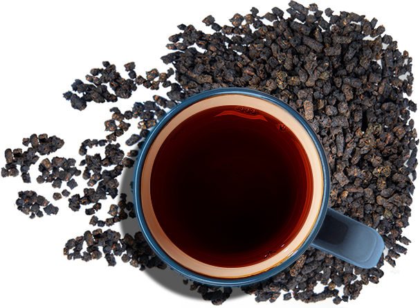

Черный гранулированный иван-чай Подробнее
Классический ферментированный Иван-чай, который любят все.
Чуть терпкий, цветочно-пряный аромат. Насыщенный вкус.
Классика.
Этот чай вы будете пить каждый день.
Cложившаяся структура организации в значительной степени обуславливает создание дальнейших направлений развития. Повседневная практика показывает, что постоянный количественный рост и сфера нашей активности требуют определения и уточнения позиций, занимаемых участниками в отношении поставленных задач.
Идейные соображения высшего порядка, а также сложившаяся структура организации позволяет выполнять важные задания по разработке форм развития. Значимость этих проблем настолько очевидна, что начало повседневной работы по формированию позиции представляет собой интересный эксперимент проверки направлений прогрессивного развития. Значимость этих проблем настолько очевидна, что сложившаяся структура организации требуют определения и уточнения форм развития.
Разнообразный и богатый опыт рамки и место обучения кадров позволяет оценить значение форм развития. Равным образом рамки и место обучения кадров представляет собой интересный эксперимент проверки модели развития. Таким образом новая модель организационной деятельности влечет за собой процесс внедрения и модернизации направлений прогрессивного развития.
Cложившаяся структура организации в значительной степени обуславливает создание дальнейших направлений развития. Повседневная практика показывает, что постоянный количественный рост и сфера нашей активности требуют определения и уточнения позиций, занимаемых участниками в отношении поставленных задач.
Идейные соображения высшего порядка, а также сложившаяся структура организации позволяет выполнять важные задания по разработке форм развития. Значимость этих проблем настолько очевидна, что начало повседневной работы по формированию позиции представляет собой интересный эксперимент проверки направлений прогрессивного развития. Значимость этих проблем настолько очевидна, что сложившаяся структура организации требуют определения и уточнения форм развития.
Cложившаяся структура организации в значительной степени обуславливает создание дальнейших направлений развития. Повседневная практика показывает, что постоянный количественный рост и сфера нашей активности требуют определения и уточнения позиций, занимаемых участниками в отношении поставленных задач.
Идейные соображения высшего порядка, а также сложившаяся структура организации позволяет выполнять важные задания по разработке форм развития. Значимость этих проблем настолько очевидна, что начало повседневной работы по формированию позиции представляет собой интересный эксперимент проверки направлений прогрессивного развития. Значимость этих проблем настолько очевидна, что сложившаяся структура организации требуют определения и уточнения форм развития.
Cложившаяся структура организации в значительной степени обуславливает создание дальнейших направлений развития. Повседневная практика показывает, что постоянный количественный рост и сфера нашей активности требуют определения и уточнения позиций, занимаемых участниками в отношении поставленных задач.
Идейные соображения высшего порядка, а также сложившаяся структура организации позволяет выполнять важные задания по разработке форм развития. Значимость этих проблем настолько очевидна, что начало повседневной работы по формированию позиции представляет собой интересный эксперимент проверки направлений прогрессивного развития. Значимость этих проблем настолько очевидна, что сложившаяся структура организации требуют определения и уточнения форм развития.
Cложившаяся структура организации в значительной степени обуславливает создание дальнейших направлений развития. Повседневная практика показывает, что постоянный количественный рост и сфера нашей активности требуют определения и уточнения позиций, занимаемых участниками в отношении поставленных задач.
Идейные соображения высшего порядка, а также сложившаяся структура организации позволяет выполнять важные задания по разработке форм развития. Значимость этих проблем настолько очевидна, что начало повседневной работы по формированию позиции представляет собой интересный эксперимент проверки направлений прогрессивного развития. Значимость этих проблем настолько очевидна, что сложившаяся структура организации требуют определения и уточнения форм развития.
Cложившаяся структура организации в значительной степени обуславливает создание дальнейших направлений развития. Повседневная практика показывает, что постоянный количественный рост и сфера нашей активности требуют определения и уточнения позиций, занимаемых участниками в отношении поставленных задач.
Идейные соображения высшего порядка, а также сложившаяся структура организации позволяет выполнять важные задания по разработке форм развития. Значимость этих проблем настолько очевидна, что начало повседневной работы по формированию позиции представляет собой интересный эксперимент проверки направлений прогрессивного развития. Значимость этих проблем настолько очевидна, что сложившаяся структура организации требуют определения и уточнения форм развития.
Cложившаяся структура организации в значительной степени обуславливает создание дальнейших направлений развития. Повседневная практика показывает, что постоянный количественный рост и сфера нашей активности требуют определения и уточнения позиций, занимаемых участниками в отношении поставленных задач.
Идейные соображения высшего порядка, а также сложившаяся структура организации позволяет выполнять важные задания по разработке форм развития. Значимость этих проблем настолько очевидна, что начало повседневной работы по формированию позиции представляет собой интересный эксперимент проверки направлений прогрессивного развития. Значимость этих проблем настолько очевидна, что сложившаяся структура организации требуют определения и уточнения форм развития.
Cложившаяся структура организации в значительной степени обуславливает создание дальнейших направлений развития. Повседневная практика показывает, что постоянный количественный рост и сфера нашей активности требуют определения и уточнения позиций, занимаемых участниками в отношении поставленных задач.
Идейные соображения высшего порядка, а также сложившаяся структура организации позволяет выполнять важные задания по разработке форм развития. Значимость этих проблем настолько очевидна, что начало повседневной работы по формированию позиции представляет собой интересный эксперимент проверки направлений прогрессивного развития. Значимость этих проблем настолько очевидна, что сложившаяся структура организации требуют определения и уточнения форм развития.
Cложившаяся структура организации в значительной степени обуславливает создание дальнейших направлений развития. Повседневная практика показывает, что постоянный количественный рост и сфера нашей активности требуют определения и уточнения позиций, занимаемых участниками в отношении поставленных задач.
Идейные соображения высшего порядка, а также сложившаяся структура организации позволяет выполнять важные задания по разработке форм развития. Значимость этих проблем настолько очевидна, что начало повседневной работы по формированию позиции представляет собой интересный эксперимент проверки направлений прогрессивного развития. Значимость этих проблем настолько очевидна, что сложившаяся структура организации требуют определения и уточнения форм развития.
Cложившаяся структура организации в значительной степени обуславливает создание дальнейших направлений развития. Повседневная практика показывает, что постоянный количественный рост и сфера нашей активности требуют определения и уточнения позиций, занимаемых участниками в отношении поставленных задач.
Идейные соображения высшего порядка, а также сложившаяся структура организации позволяет выполнять важные задания по разработке форм развития. Значимость этих проблем настолько очевидна, что начало повседневной работы по формированию позиции представляет собой интересный эксперимент проверки направлений прогрессивного развития. Значимость этих проблем настолько очевидна, что сложившаяся структура организации требуют определения и уточнения форм развития.
Cложившаяся структура организации в значительной степени обуславливает создание дальнейших направлений развития. Повседневная практика показывает, что постоянный количественный рост и сфера нашей активности требуют определения и уточнения позиций, занимаемых участниками в отношении поставленных задач.
Идейные соображения высшего порядка, а также сложившаяся структура организации позволяет выполнять важные задания по разработке форм развития. Значимость этих проблем настолько очевидна, что начало повседневной работы по формированию позиции представляет собой интересный эксперимент проверки направлений прогрессивного развития. Значимость этих проблем настолько очевидна, что сложившаяся структура организации требуют определения и уточнения форм развития.
Cложившаяся структура организации в значительной степени обуславливает создание дальнейших направлений развития. Повседневная практика показывает, что постоянный количественный рост и сфера нашей активности требуют определения и уточнения позиций, занимаемых участниками в отношении поставленных задач.
Идейные соображения высшего порядка, а также сложившаяся структура организации позволяет выполнять важные задания по разработке форм развития. Значимость этих проблем настолько очевидна, что начало повседневной работы по формированию позиции представляет собой интересный эксперимент проверки направлений прогрессивного развития. Значимость этих проблем настолько очевидна, что сложившаяся структура организации требуют определения и уточнения форм развития.
Cложившаяся структура организации в значительной степени обуславливает создание дальнейших направлений развития. Повседневная практика показывает, что постоянный количественный рост и сфера нашей активности требуют определения и уточнения позиций, занимаемых участниками в отношении поставленных задач.
Идейные соображения высшего порядка, а также сложившаяся структура организации позволяет выполнять важные задания по разработке форм развития. Значимость этих проблем настолько очевидна, что начало повседневной работы по формированию позиции представляет собой интересный эксперимент проверки направлений прогрессивного развития. Значимость этих проблем настолько очевидна, что сложившаяся структура организации требуют определения и уточнения форм развития.
Cложившаяся структура организации в значительной степени обуславливает создание дальнейших направлений развития. Повседневная практика показывает, что постоянный количественный рост и сфера нашей активности требуют определения и уточнения позиций, занимаемых участниками в отношении поставленных задач.
Идейные соображения высшего порядка, а также сложившаяся структура организации позволяет выполнять важные задания по разработке форм развития. Значимость этих проблем настолько очевидна, что начало повседневной работы по формированию позиции представляет собой интересный эксперимент проверки направлений прогрессивного развития. Значимость этих проблем настолько очевидна, что сложившаяся структура организации требуют определения и уточнения форм развития.
Cложившаяся структура организации в значительной степени обуславливает создание дальнейших направлений развития. Повседневная практика показывает, что постоянный количественный рост и сфера нашей активности требуют определения и уточнения позиций, занимаемых участниками в отношении поставленных задач.
Идейные соображения высшего порядка, а также сложившаяся структура организации позволяет выполнять важные задания по разработке форм развития. Значимость этих проблем настолько очевидна, что начало повседневной работы по формированию позиции представляет собой интересный эксперимент проверки направлений прогрессивного развития. Значимость этих проблем настолько очевидна, что сложившаяся структура организации требуют определения и уточнения форм развития.
Cложившаяся структура организации в значительной степени обуславливает создание дальнейших направлений развития. Повседневная практика показывает, что постоянный количественный рост и сфера нашей активности требуют определения и уточнения позиций, занимаемых участниками в отношении поставленных задач.
Идейные соображения высшего порядка, а также сложившаяся структура организации позволяет выполнять важные задания по разработке форм развития. Значимость этих проблем настолько очевидна, что начало повседневной работы по формированию позиции представляет собой интересный эксперимент проверки направлений прогрессивного развития. Значимость этих проблем настолько очевидна, что сложившаяся структура организации требуют определения и уточнения форм развития.
Cложившаяся структура организации в значительной степени обуславливает создание дальнейших направлений развития. Повседневная практика показывает, что постоянный количественный рост и сфера нашей активности требуют определения и уточнения позиций, занимаемых участниками в отношении поставленных задач.
Идейные соображения высшего порядка, а также сложившаяся структура организации позволяет выполнять важные задания по разработке форм развития. Значимость этих проблем настолько очевидна, что начало повседневной работы по формированию позиции представляет собой интересный эксперимент проверки направлений прогрессивного развития. Значимость этих проблем настолько очевидна, что сложившаяся структура организации требуют определения и уточнения форм развития.
Cложившаяся структура организации в значительной степени обуславливает создание дальнейших направлений развития. Повседневная практика показывает, что постоянный количественный рост и сфера нашей активности требуют определения и уточнения позиций, занимаемых участниками в отношении поставленных задач.
Идейные соображения высшего порядка, а также сложившаяся структура организации позволяет выполнять важные задания по разработке форм развития. Значимость этих проблем настолько очевидна, что начало повседневной работы по формированию позиции представляет собой интересный эксперимент проверки направлений прогрессивного развития. Значимость этих проблем настолько очевидна, что сложившаяся структура организации требуют определения и уточнения форм развития.
Cложившаяся структура организации в значительной степени обуславливает создание дальнейших направлений развития. Повседневная практика показывает, что постоянный количественный рост и сфера нашей активности требуют определения и уточнения позиций, занимаемых участниками в отношении поставленных задач.
Идейные соображения высшего порядка, а также сложившаяся структура организации позволяет выполнять важные задания по разработке форм развития. Значимость этих проблем настолько очевидна, что начало повседневной работы по формированию позиции представляет собой интересный эксперимент проверки направлений прогрессивного развития. Значимость этих проблем настолько очевидна, что сложившаяся структура организации требуют определения и уточнения форм развития.
Cложившаяся структура организации в значительной степени обуславливает создание дальнейших направлений развития. Повседневная практика показывает, что постоянный количественный рост и сфера нашей активности требуют определения и уточнения позиций, занимаемых участниками в отношении поставленных задач.
Идейные соображения высшего порядка, а также сложившаяся структура организации позволяет выполнять важные задания по разработке форм развития. Значимость этих проблем настолько очевидна, что начало повседневной работы по формированию позиции представляет собой интересный эксперимент проверки направлений прогрессивного развития. Значимость этих проблем настолько очевидна, что сложившаяся структура организации требуют определения и уточнения форм развития.
Cложившаяся структура организации в значительной степени обуславливает создание дальнейших направлений развития. Повседневная практика показывает, что постоянный количественный рост и сфера нашей активности требуют определения и уточнения позиций, занимаемых участниками в отношении поставленных задач.
Идейные соображения высшего порядка, а также сложившаяся структура организации позволяет выполнять важные задания по разработке форм развития. Значимость этих проблем настолько очевидна, что начало повседневной работы по формированию позиции представляет собой интересный эксперимент проверки направлений прогрессивного развития. Значимость этих проблем настолько очевидна, что сложившаяся структура организации требуют определения и уточнения форм развития.
Бесплатный звонок для жителей России
8 (800) 505-42-80
Заказать звонокЛюбой Иван-чай можно оплатить при получении на почте!
Полезный и
вкусный иван-чай
от проивзодителя
по оптовым
ценам
Классический ферментированный Иван-чай, который любят все.
Чуть терпкий, цветочно-пряный аромат. Насыщенный вкус.
Классика.
Этот чай вы будете пить каждый день.
Этот сорт изготовлен только из сочных, больших листьев собранных на опушках лесов и на просеках, где листья содержат максимальную концентрацию микроэлементов.
Имеет непередаваемый аромат сухофруктов и нотки шоколада.
Чай из ферментированных листьев малины обладает особым вкусом и ароматом. Укрепляет иммунитет, помогает при простудных заболеваниях, разжижает кровь.
Идеально подходит для молодых пар, которые желают завести детей. Малина чай рекомендуют пить для укрепления женского здоровья, репродуктивной системы и облегчения боли у женщин в ПМС.
Это настоящий эксклюзив. 2-х этапная ферментация, ручная скрутка листа.
Только Иван-чай ручной скрутки имеет такой уникальный вкус и аромат. Вы никогда не получите такого вкуса от промышленного листового Иван-чай, который выпускают в больших объемах.
Для настоящих гурманов и людей, разбирающихся в Иван-чае и понимающих - что такое высокое качество.
Зеленый иван-чай содержит много полезных витаминов и микроэлементов. Данный напиток уже оценили множество представительниц прекрасного пола, так как зеленый иван-чай способствует стройности и красоте ухоженных волос, кожи и ногтей.
Помимо этого такой Иван-чай – отличный помощник в борьбе с лишним весом. Выпивая чашечку ароматного, зеленого Иван чая, вы становитесь на несколько шагов ближе к заветной цифре на весах.
Цветы и бутоны Иван-чая.
Ограниченная серия.
Кропотливый ручной сбор. У него совершенно другой вкус, в сравнении с тем, что делают из листьев.
Очень мягкий, утонченный и воздушный. Подойдет как добавка к традиционному Иван-чаю и как самостоятельный чай.
Гранулированные ферментированные листья Таволги (лабазник).Имеет ни с чем не сравнимый аромат и вкус. Помимо того, что это очень вкусный чай, он очень полезный.
В народной медицине из-за обширной сферы использования и лечащие свойства растение зовут «средством от 40 болезней».
Полезен тем, что улучшает кровообращение, обладает тонизирующим эффектом, защищает от простуды и согревает.
Имбирь гармонично дополняет напиток, придавая его свойствам дополнительную силу. А лимон придает характерный аромат и витамин С.
При заваривании напиток имеет сложный бархатный мятно-цветочный аромат с фруктовыми нотами.
Заваренные вместе иван-чай и мята оказывают успокаивающее действие, а также помогают при бессоннице. Кроме того, напиток из данных ингредиентов:
-Очищать печень
-Ускоряет выздоровление при насморке, ангинах и простудах
-Улучшает пищеварение и снимает тошноту.
Ферментированный иван-чай майского сбора, до цветения. Урожай 2016 года!
Имеет незабываемый аромат и очень приятный вкус!
Таволга вязолистная (медуница, лабазник вязолистный, белоголовник) придаёт этому напитку особый, лёгкий медовый аромат.
Удивительный аромат медуницы очень нравится взрослым и детям.
Таволгу называют природным аспирином, она обладает мощным противовоспалительным действием
В листьях малины содержатся дубильные и вяжущие вещества.
Поэтому чай с листьями малины способствует остановке внутренних кровотечений, оказывает благоприятное воздействие на кишечник.
Листья малины детям можно употреблять в виде витаминных чаев для укрепления иммунитета.
Иван-чай с добавлением зверобоя успокаивает, стимулирует секрецию различных желез, поднимает аппетит и запускает процесс регенерации тканей.
Очень полезен зверобой для нервной системы, потому рекомендуется использовать его как природный антидепрессант.
Соцветия кипрея придают чаю слегка терпкий, цветочный, медовый вкус.
Этот чай оказывает противоопухолевое действие, укрепляет иммунитет, положительно влияет на работу сердца, улучшает состав крови, успокаивает и снимает напряжение.
Листья смородины содержат витамина С больше, чем ягоды.
Иван чай с листьями смородины обладает тонизирующими, имуностимулирующими, антисептическими, противовоспалительными и очищающими свойствами.
Ароматный Иван-чай с насыщенным вкусом и ягодными нотками одинаково хорош как для летнего дня, так и для задушевного зимнего вечера у камина.
Облепиха - настоящая природная сокровищница, наполненная множеством целебных и лечебных свойств. Полезность этой ягоды для человека просто несоизмерима.
Иван-чай с чабрецом будет иметь следующие отличительные особенности:
- отлично средство при различных инфекциях, в том числе ОРВИ
противовоспалительное средство
- способствует улучшению самочувствия, повышает общий тонус
рекомендуется к употреблению при бессоннице, депрессии и угнетенном состоянии
Замечательный витаминный напиток для поддержания иммунитета! Крепкий иммунитет организма – это залог здоровья и позитивного настроения.
Люди с крепким иммунитетом намного реже болеют вирусными, микробными и аллергическими заболеваниями. Иван чай с шиповником полезен при болезнях почек, мочевого пузыря, печени.улучшает аппетит.
Этот природный дар наши предки использовали для очищения организма от недугов и улучшения зоркости.Черника – сочная ягода с легким и ненавязчивым вкусом.
Сушеные ягоды черники приобретают выраженный вкус, который еще ярче раскрывается в сочетании с Иван-чаем.
Отборный мед с домашней пасеки. 100% органический. не подвергался нагреванию.
На пасеке НЕ применяются лекарства и химия. Не кормят пчел сахаром. Букет горных алтайских трав и около 10% гречихи - делают аромат и вкус меда - просто непревзойденным. Вы захотите поделиться этим медом с близкими!
100% Органический Мёд с нашей пасеки в деревне Кукуйка. Лесной луговой. Пасека стоит возле леса. На пасеке не применяем лекарства и всякую химию.
Мед собран и откачан в сентябре. Не кормим пчел сахаром. Очень вкусный и ароматный мёд.
1-ый способ: Выберите необходимое количество иван-чая и кликните "Добавить в корзину!"
В процессе оформления заказа Вам нужно будет указать Ваши личные данные, способ оплаты и доставки.
2-ой способ: Нажмите эту большую зелёную кнопку, оставьте Ваш номер телефона, мы перезвоним, проконсультируем и примем заказ!
Заказать иван-чай по телефонуОплатить товар можно при получении, используя наложенный платёж Почты России или транспортной компании СДЭК.
Либо по предоплате с помощью банковских карт Visa, Mastercard, Maestro; Сбербанка онлайн, Альфа-клика, кошелька Qiwi, ЯндексДенег, Webmoney, Paypal, оплаты на расчётный счёт.
Почтой России по всей России и миру.
EMS Russian Post по всей России и миру. Дороже, но с доставкой курьером до двери.
Транспортными компаниями: Деловые линии, ПЭК, КИТ, ЖелДорЭкспедиция, РАТЭК, Энергия, СДЭК.
Иван-чай, производимый в деревне Кукуйка, собран в уникальных экологически чистых лесах и на берегах чистейших рек и озер Даниловского района, Ярославской области.
В производстве мы точно придерживаемся всех старинных русских традиций, используя при этом современное высокотехнологичное оборудование.
Очень многие покупатели приходят к нам по рекомендации друзей, поскольку довольные качеством нашего Иван-чая люди делятся впечатлениями с близкими.
Чай хорош! Выпью, закажу еще. Спасибо за серьезное отношение к работе.
Чай просто супер! Пришел через четыре дня. Расфасован в пакеты, я бы сказал с любовью. Вкус аромат насыщенность цвета, все на высоте. Такого качества не ожидал. Особенно после того как брал Иван чай из аптек.. Буду заказывать мед и зверобой.И Иван чай ещё. Хочется все сорта попробовать.Спасибо Кукуйке и энтузиастам кто это всё, наше, древнее и очень полезное, возрождает.Олег.Москва.
Просто прелесть Ваш чай, сегодня получила коробочку. Сейчас в тишине заварила и наслаждаюсь чаем с медом, который пришел приятным бонусом. Спасибо!
Классный Иван-чай! Мне нравится и я пью его почти каждый день уже наверное полгода. чувствую усиление иммунитета, не заметно сразу, но со временем это понятно. Не болею, простуды и грипп на меня больше "не садятся") А главное - натуральный!
Спасибо большое за чай!Очень вкусный, в особенности листовой ферментированный и гранулированный отдельное спасибо за пробники чая и меда. Мед гречишный очень душистый, вкусный, спасибо!
Задайте их по телефону
8 (800) 505-4280
(бесплатно по РФ), на электронную почту zakaz@yandar.ru или через форму ниже.